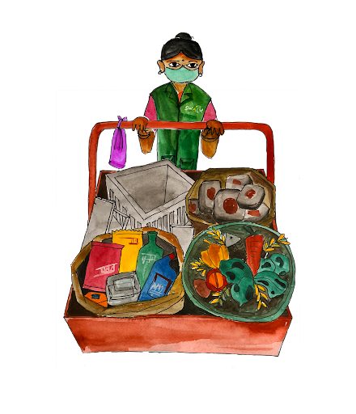

Over the past 30 years, KKPKP and SWaCH have built a transformative ecosystem for waste pickers in Pune. These organizations, owned and governed by waste pickers themselves, have anchored a movement rooted in dignity, self-reliance, and social justice. Together, they have empowered over 3,850 waste pickers—predominantly women from marginalized communities—offering them secure, equitable livelihoods and recognition as essential urban service providers. KKPKP has advocated tirelessly for the rights of waste pickers, pioneering social protection measures and recognition frameworks. SWaCH, a waste picker-owned cooperative, operationalizes this vision—delivering professional, decentralized, door-to-door waste services to over 9.8 lakh properties. Collectively, these organizations have demonstrated how inclusive models can generate environmental gains, create green livelihoods, and embed justice into the city’s everyday infrastructure.
Resource Library
Want to support our work? Donate to Kashtakari Panchayat
